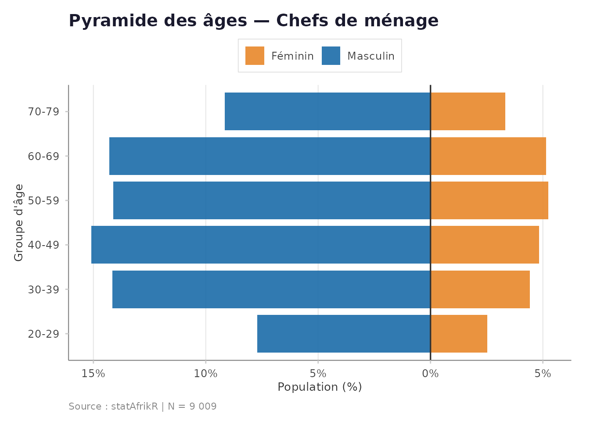
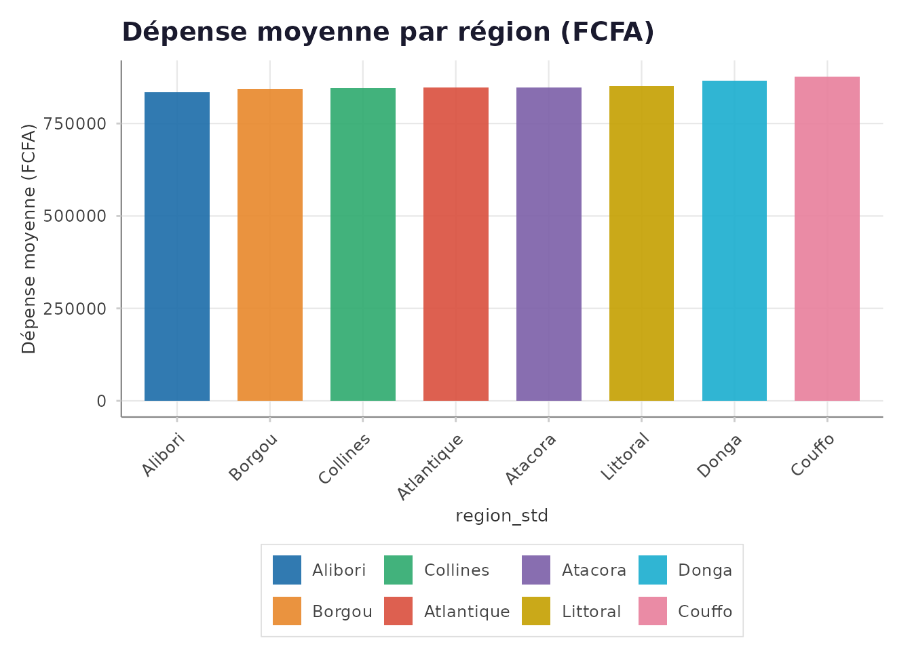

Analyse d'une enquête pondérée complète
Source:vignettes/02-enquete-ponderee.Rmd
02-enquete-ponderee.RmdIntroduction
Cette vignette illustre le pipeline complet d’analyse d’une Enquête Démographique et de Santé (EDS) ou d’une Enquête sur les Conditions de Vie (EMOP/EMICOV), avec pondération complexe (strates + grappes).
1. Données simulées d’une enquête ménages
set.seed(2024)
n <- 5000
donnees_eds <- tibble::tibble(
id_menage = paste0("MEN_", stringr::str_pad(1:n, 5, pad = "0")),
strate = sample(c("Urbain_Nord", "Urbain_Sud", "Rural_Nord",
"Rural_Sud"), n, replace = TRUE),
grappe = sample(1:250, n, replace = TRUE),
poids_final = runif(n, 0.4, 3.2),
region = sample(c("Alibori", "Atacora", "Atlantique",
"Borgou", "Collines", "Couffo",
"Donga", "Littoral"), n, replace = TRUE),
milieu = sample(c("Urbain", "Rural"), n, replace = TRUE,
prob = c(0.4, 0.6)),
age_chef = sample(25:75, n, replace = TRUE),
sexe_chef = sample(c("Masculin", "Féminin"), n, replace = TRUE,
prob = c(0.75, 0.25)),
taille_menage = sample(1:12, n, replace = TRUE,
prob = c(0.05, 0.1, 0.15, 0.2, 0.18,
0.12, 0.08, 0.05, 0.03,
0.02, 0.01, 0.01)),
depense_totale = abs(rnorm(n, 850000, 420000)),
acces_eau = sample(c(0L, 1L), n, replace = TRUE, prob = c(0.35, 0.65)),
electricite = sample(c(0L, 1L), n, replace = TRUE, prob = c(0.45, 0.55)),
scolarisation = sample(c(0L, 1L), n, replace = TRUE, prob = c(0.28, 0.72))
)
cat("Ménages :", nrow(donnees_eds), "\n")
#> Ménages : 5000
cat("Régions :", length(unique(donnees_eds$region)), "\n")
#> Régions : 82. Validation de la qualité
qualite <- valider_qualite_donnees(
donnees_eds,
vars_cles = "id_menage",
seuil_na = 0.05
)3. Nettoyage et harmonisation
# Harmonisation des régions
donnees_eds <- harmoniser_regions(
donnees_eds,
var_region = "region",
pays = "BJ",
var_sortie = "region_std",
signaler_non_trouves = FALSE
)
# Journal de traitement
etape <- tracer_flux_traitement(
donnees_eds,
"Harmonisation des régions"
)4. Plan de sondage complexe
plan <- appliquer_ponderations(
data = donnees_eds,
var_poids = "poids_final",
var_strate = "strate",
var_grappe = "grappe"
)5. Statistiques descriptives pondérées
stats <- stat_descr(
plan,
vars = c("depense_totale", "taille_menage", "age_chef"),
ic = TRUE
)
knitr::kable(stats, caption = "Statistiques descriptives pondérées")| variable | n | moyenne | mediane | ecart_type | q1 | q3 | min | max | ic_bas | ic_haut |
|---|---|---|---|---|---|---|---|---|---|---|
| depense_totale | 5000 | 855550.30 | 844604.8 | 407179.89 | 565935.4 | 1135515 | 3.42 | 2244946 | 843108.95 | 867991.65 |
| taille_menage | 5000 | 4.82 | 5.0 | 2.28 | 3.0 | 6 | 1.00 | 12 | 4.75 | 4.89 |
| age_chef | 5000 | 50.23 | 50.0 | 14.81 | 38.0 | 63 | 25.00 | 75 | 49.77 | 50.69 |
6. Tableaux croisés
tab <- tab_croisee(
plan,
var_ligne = "milieu",
var_col = "region_std",
pourcentage = "colonne",
format_sortie = "tibble"
)
knitr::kable(
head(tab, 16),
caption = "Répartition par milieu et région (%)"
)| milieu | region_std | proportion | pourcentage | effectif |
|---|---|---|---|---|
| Rural | Alibori | 0.6015392 | 60.2 | 690.6449 |
| Urbain | Alibori | 0.3984608 | 39.8 | 457.4846 |
| Rural | Atacora | 0.5741637 | 57.4 | 646.5168 |
| Urbain | Atacora | 0.4258363 | 42.6 | 479.4978 |
| Rural | Atlantique | 0.6109632 | 61.1 | 660.5620 |
| Urbain | Atlantique | 0.3890368 | 38.9 | 420.6193 |
| Rural | Borgou | 0.5826774 | 58.3 | 649.6789 |
| Urbain | Borgou | 0.4173226 | 41.7 | 465.3101 |
| Rural | Collines | 0.5995166 | 60.0 | 656.0013 |
| Urbain | Collines | 0.4004834 | 40.0 | 438.2158 |
| Rural | Couffo | 0.6094196 | 60.9 | 717.5268 |
| Urbain | Couffo | 0.3905804 | 39.1 | 459.8670 |
| Rural | Donga | 0.6176964 | 61.8 | 674.2354 |
| Urbain | Donga | 0.3823036 | 38.2 | 417.2966 |
| Rural | Littoral | 0.5818214 | 58.2 | 683.9561 |
| Urbain | Littoral | 0.4181786 | 41.8 | 491.5869 |
7. Calcul des indicateurs de pauvreté
indicateurs_ipm <- list(
sante = c("acces_eau"),
education = c("scolarisation"),
niveau_vie = c("electricite")
)
resultat_ipm <- calcul_ipm(
donnees_eds,
indicateurs_ipm,
seuil_pauvrete = 1/3,
var_poids = "poids_final"
)8. Mesures d’inégalité
inegalites <- decomposer_inegalite(
donnees_eds,
var_revenu = "depense_totale",
var_groupe = "milieu",
var_poids = "poids_final"
)
cat("Indice de Gini :", inegalites$gini, "\n")
#> Indice de Gini : 0.2704
knitr::kable(
inegalites$decomposition,
caption = "Décomposition des inégalités par milieu"
)| groupe | n | moyenne | gini_interne | part_pop | part_revenu |
|---|---|---|---|---|---|
| Rural | 3005 | 852312.3 | 0.2710 | 0.5971 | 0.5948 |
| Urbain | 1995 | 860348.6 | 0.2694 | 0.4029 | 0.4052 |
9. Visualisation
library(ggplot2)
pyramide_ages(
donnees_eds,
var_age = "age_chef",
var_sexe = "sexe_chef",
var_poids = "poids_final",
titre = "Pyramide des âges — Chefs de ménage",
largeur_classe = 10L
)
Pyramide des âges des chefs de ménage
stats_region <- stat_descr(
donnees_eds,
vars = "depense_totale",
groupe = "region_std",
ic = TRUE
)
graphique_barres(
stats_region,
var_x = "region_std",
var_y = "moyenne",
var_ic_bas = "ic_bas",
var_ic_haut = "ic_haut",
titre = "Dépense moyenne par région (FCFA)",
label_y = "Dépense moyenne (FCFA)",
trier = TRUE
) + ggplot2::theme(axis.text.x = ggplot2::element_text(angle = 45, hjust = 1))
Dépense moyenne par région
10. Régression
# Déterminants de la dépense
modele <- analyse_regression(
log(depense_totale) ~ age_chef + taille_menage + electricite + acces_eau,
data = donnees_eds,
type = "lineaire",
format_sortie = "tibble"
)
knitr::kable(
modele[, c("terme", "estimateur", "ic_bas", "ic_haut",
"p_valeur", "significatif")],
caption = "Déterminants de la dépense des ménages"
)| terme | estimateur | ic_bas | ic_haut | p_valeur | significatif |
|---|---|---|---|---|---|
| (Intercept) | 13.5214 | 13.4267 | 13.6161 | 0.0000 | *** |
| age_chef | -0.0016 | -0.0031 | -0.0002 | 0.0269 | * |
| taille_menage | 0.0046 | -0.0047 | 0.0139 | 0.3302 | |
| electricite | 0.0196 | -0.0230 | 0.0622 | 0.3667 | |
| acces_eau | -0.0003 | -0.0447 | 0.0441 | 0.9894 |
11. Export et diffusion
# Anonymisation
donnees_anon <- anonymiser_donnees(
donnees_eds,
vars_supprimer = c("id_menage"),
vars_generaliser = list(age_chef = 10, depense_totale = 100000),
rapport = FALSE
)
# Métadonnées DDI
generer_metadonnees_ddi(
data = donnees_anon,
titre = "Enquête Démographique et de Santé — 2024",
pays = "Bénin",
annee = 2024,
institution = "INSAE",
fichier_sortie = "outputs/eds_2024_ddi.xml"
)
# Package de diffusion
compresser_package_diffusion(
donnees = donnees_anon,
repertoire_sortie = "diffusion/",
nom_package = "EDS_BEN_2024_v1"
)